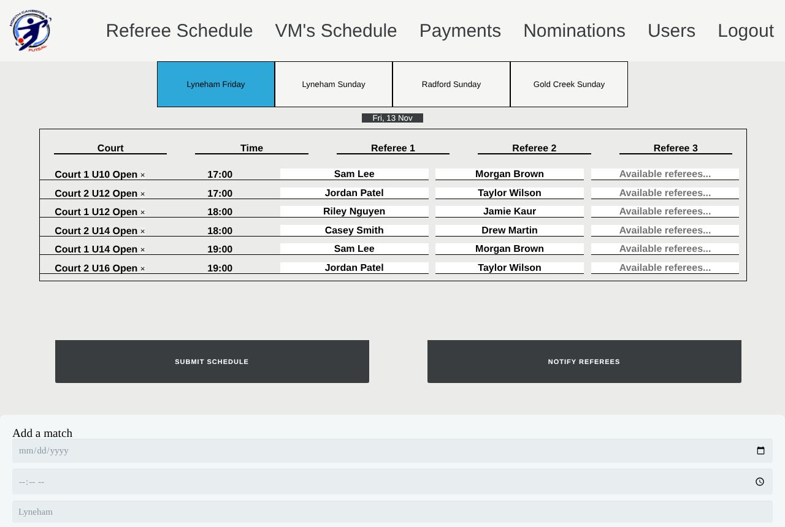
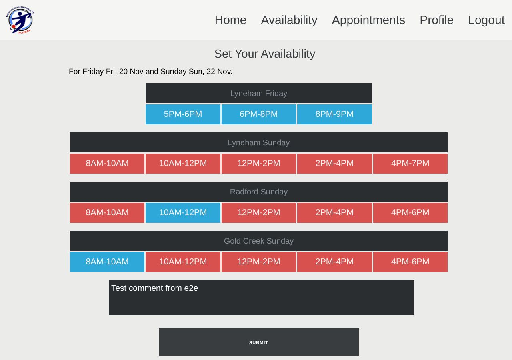
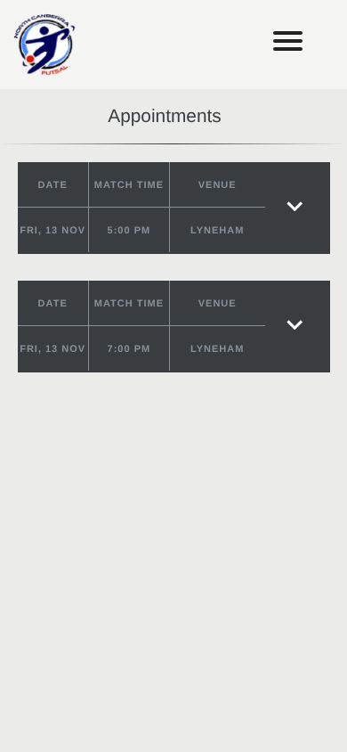
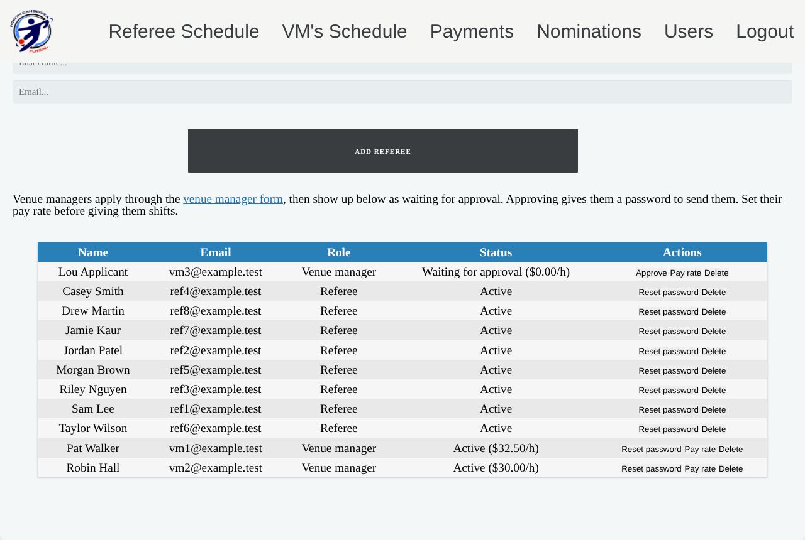

Referee Appointments System
Weekend scheduling for a community futsal club: who is available, who referees which match, who runs each venue, what everyone is paid, and the emails that tell them.
The demo runs the real front end with a simulated server in your browser, filled with fake data. Pick a role on the login page. Nothing you enter leaves your browser, and it resets daily.

The problem
North Canberra Futsal runs dozens of junior matches every weekend across three venues. Each match needs two or three referees, and each venue needs a manager on shift. Availability used to arrive by text and email, the schedule lived in a spreadsheet, and pay was counted by hand.
What it does
- Referees and venue managers tick the slots they can do each week, then see their matches or shifts on their phone and confirm them.
- The admin appoints referees from a list of who's available, adds or imports fixtures from CSV, assigns venue shifts, and emails everyone in one click.
- Pay is calculated by the database: match pay from the age group, shift hours from start and end times. Totals by week, month or year export to CSV.
- Public forms handle team nominations and venue manager applications, which the admin approves.


Rebuilding it securely
I first built this in 2020 while learning. It worked, and the club used it, but when I came back to it during my cyber security studies, I could see how exposed it was. The 2026 rebuild fixed each problem at the root:
| Before | After |
|---|---|
| The browser said who you were, using a cookie anyone could edit. | Server-side sessions with an HttpOnly cookie, and a role check on every endpoint. |
| The admin "password" was 1234, sent to the browser and checked there. | A separate admin role, enforced on the server. |
| Passwords stored in plain text. | bcrypt hashes. Old passwords are upgraded the next time each person logs in, so nobody has to be reset. |
| SQL built by gluing strings together (SQL injection). | Prepared statements for every query. |
| Any website could call the API (open CORS) and post on a user's behalf. | Same-origin only, plus a request header that other sites can't forge (CSRF protection). |
| Uploads kept their original names and were publicly reachable. | Random names, file type checked from the contents, and served only after a login check. |
| Database errors shown to visitors. | Errors logged on the server; visitors see a generic message. |
Other engineering
- No database schema survived, so I rebuilt it from the queries in the code and the table structure of old exports, including generated columns for pay and hours.
- Configuration comes from environment variables or a config file kept out of git, so it runs on cheap shared hosting or a container.
- Two test suites: a curl security suite that checks logged-out, wrong-role, CSRF, injection and blocked-file cases, and a Playwright browser suite that covers every role's main flow. Both run against MariaDB and against Apache with the production rules.
- A demo mode with one-click logins for each role, which also blocks actions that would let visitors lock each other out.
- The demo on this site is the real front end with the PHP server swapped for a JavaScript stand-in that follows the same rules (roles, validation, pay maths) against fake data in the browser. The same Playwright suite runs against it.

Why plain PHP
A volunteer-run club pays for the cheapest shared hosting it can find. PHP and MySQL run on all of it, with no build step and no server to look after, so the whole thing can be handed over and kept running for a few dollars a month.